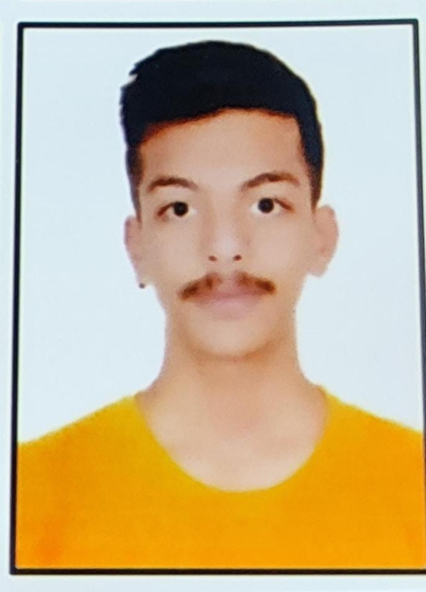

Yash Singh Jadon

Summary
Detail-oriented Computer Science graduate with a strong foundation in
programming, algorithms, and systems design. Skilled in software
development, data analysis, and problem-solving. Proven ability to work
collaboratively on projects and deliver innovative solutions. Seeking to
leverage technical expertise and a passion for technology in a dynamic
role.
Education
- SSLC (12th) is from CBSE BOARD in 2020: 69.8 %
- HSLC (10th) is from CBSE BOARD in 2018: 80.4 %
- Pursuing B.tech from SVIIT.
Skills
- Programming Languages : Python, JavaScript
- Web Development : HTML, CSS
- Database Management : MySQL
- Tools : Excel, PowerPoint, Tableau
- Soft Skills : Good Communication, Adaptability
Certifications
- Soft skill certification on learnvern
- Web Development bootcamp certification on udemy by angela vu
- Python development bootcamp certication on udemy by angela vu
Other
Personal Details
My Hobbies